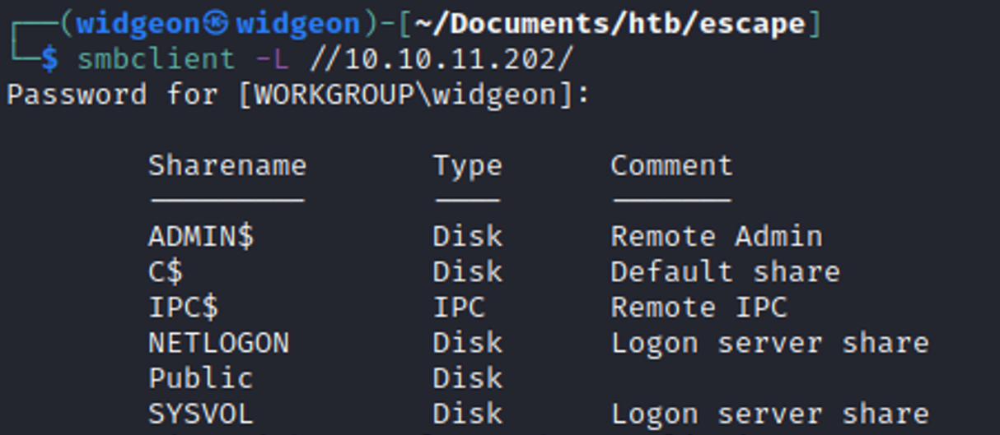
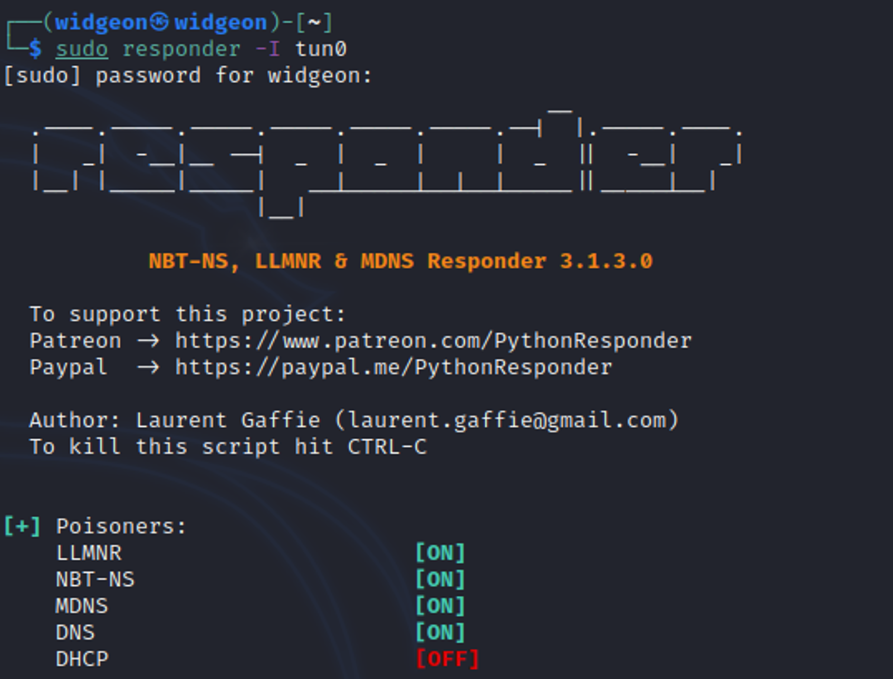

March 14, 2023
Escape
Tools Needed:Smbclient, Evil-Winrm, Responder, Impacket and Openssl
Step 1: Start off with an Nmap Scan
nmap -sV -sC <IP ADDRESS> -oA <FILE NAME> -Pn
Trying to modify my DNS server to see if I can use their server in / etc / sources.conf
Adding sequel.htb from the nmap scan to /etc/hosts
smbclient -L //10.10.11.202/
Looks like there’s something here with smbclient but I don’t know how to access it. So, I’ll try another path for now.
Nothing here with smbmap.
Back to smbclient, but this time we will specify the share we want to look at from the previous smbclient connection we had.

Finally, something we can look at! Let’s download this pdf and see what it says.
Looks like there’s some credentials here. If you look back to the nmap scan you can see that they are running MSSQL (Microsoft SQL) so we need to find a tool to connect.
Impacket has a lot of scripts for many various things, including connecting to MSSQL. It’s on kali and you can see the collection of scripts here:
https://www.kali.org/tools/impacket-scripts/
Use the credentials in the pdf to connect to the SQL server.
The syntax is strange here, and we don’t get a lot of information. So we’re going to have to use another tool to get some useful information here.
Let’s open up a responder session so we can attempt to get some info.
When we run the EXEC command from the SQL server we’re able to capture a lot of information with responder. One very useful thing is a hash, which we can verify on the hashcat website that this is a NTLMv2 hash. We’ll need to go there anyways to get the mode to crack this thing.
For hashcat lets use mode 5600.
Let’s see if we can crack it.
We eventually crack the hash, and we got the username from responder as well. So now we have all the credentials to get into this machine!
Let’s get into this machine and start poking around.
Not a lot of information here in these folders. We do find the username Ryan.Cooper
We finally find an errorlog.bak in the SQL log directory, and it’s something we can download to our machine to investigate.
We see the username Ryan.Cooper try to log in, and we also see a login attempt from a “NuclearMosquito3”. We didn’t see this user before, so I’m assuming this is the password and we can attempt to get into the machine now as Ryan Cooper.
And we’re in!
And we can get our user flag. :)
After user.txt there was not a lot of useful information on the machine. So we can go back to the nmap and see if there’s any useful information there that could be potentially useful, maybe we will find another port that could give us a hint.
There’s AD LDAP, that may be useful. Doing some research about active directory, we come across a useful article.
Active Directory Certificate Services - Domain Dominance
Lucky for us this Medium article can teach us a lot about a useful tool called Certify
Trying to follow the Medium article it tells us to use Rubeus, but there’s no compiled binaries on the GitHub, and I didn’t have all the things on my machine to compile it, so I tried one of these (Spoiler: it doesn’t work)
Ghostpack-CompiledBinaries
Openssl pkcs12 -in file.pem -keyex -CSP "Microsoft Enhanced Cryptographic Provider v1.0" -export -out escape.pfx
Having some difficulties with the Openssl.
Luckily there’s another tool called certipy-ad which is available for kali:
https://www.kali.org/tools/certipy-ad/
certipy-ad auth -pfx escape.pfx -dc-ip 10.10.11.202 -username Administrator -domain sequel.htb
Using this we can get the hash for the administrator. We could potentially crack the hash and then we’d be able to log in as administrator after some effort. Or we can use a technique called “Pass the Hash”.
Using impacket again, we’re able to pass the hash and log in as administrator.
impacket-psexec sequel.htb/Administrator@10.10.11.202 -hashes
':a52f78e4c751e5f5e17e1e9f3e58f4ee' ← the hash has to be prefixed with the : or it won’t understand.
Now that we’re in we can cat the root flag :)
Just kidding its windows, more the root flag.
Success! Escape has been pwned üòé